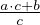

Harilike murdude korrutamiseks korrutatakse murdude lugejad omavahel ja murdude nimetajad omavahel.
Näiteks
Täisarvu korrutamiseks hariliku murruga teisendatakse täisarv kõigepealt
harilikuks murruks. Täisarv a esitub hariliku murruna kujul a = .
Näiteks
Arvu kujul a korrutamiseks hariliku murruga teisendatakse kõigepealt antud arv
liigmurruks, kujule  ja alles siis korrutatakse.
Näiteks